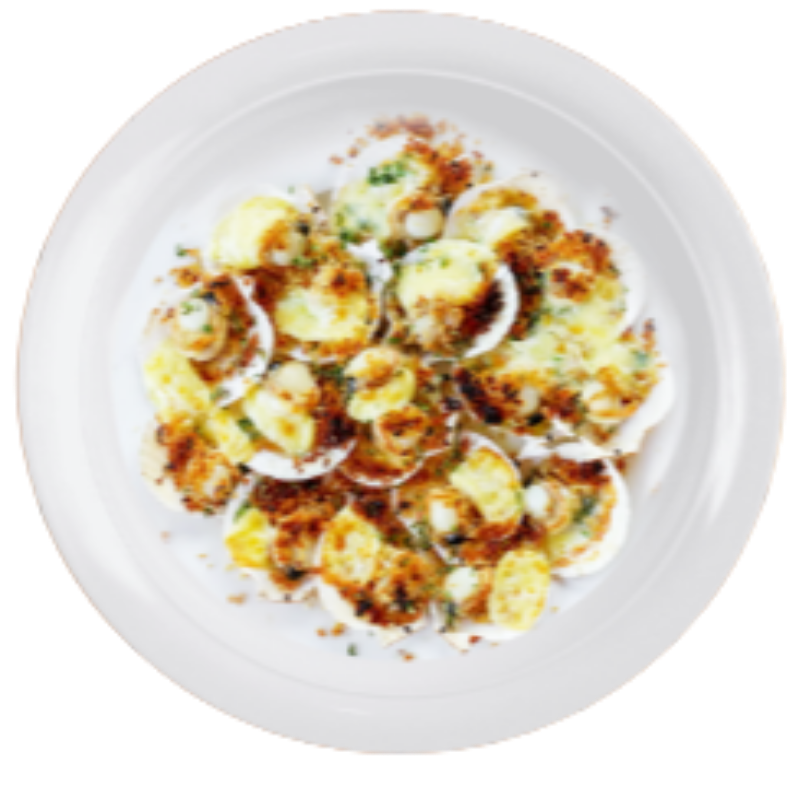

INGREDIENTS
- 4 tablespoons butter, melted
- 1 1/2 pounds bay scallops, rinsed and drained
- 1/2 cup seasoned dry bread crumbs
- 1 teaspoon onion powder
- 1 teaspoon garlic powder
- 1/2 teaspoon paprika
- 1/2 teaspoon dried parsley
- 3 cloves garlic, minced
- 1/4 cup grated Parmesan cheese

Baked Scallops

INSTRUCTION
- Preheat oven to 400 degrees F (200 degrees C)
- Pour melted butter into a 2 quart oval casserole dish. Distribute butter and scallops evenly inside the dish.
- Combine the bread crumbs, onion powder, garlic powder, paprika, parsley, minced garlic and Parmesan cheese. Sprinkle this mixture over the scallops.
- Bake in pre-heated oven until scallops are firm, about 20 minutes.